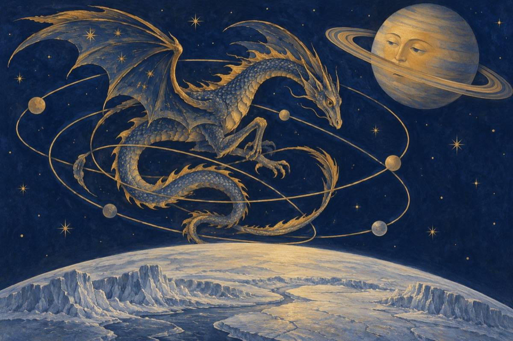

Serial cosmic – 25
AMICUL: - De ce acest balaur, pentru ce, e motivat de vreun regret?
Că loc în Univers e berechet!
RAZA SOARELUI: - De cruntă supărare
Că nu a reușit nici pân-acum să aib-o stare
În viața lui pripită,
Nu și-a găsit să stea pe o orbită
Și țopăie cum Canguru-n pustiu,
Împleticindu-se-n orbite, exact ca un chefliu!
Eu, cum sunt o rază universală,
Umblu de dimineață până-n seară
Și pe Titan când l-am privit
Ce crezi că am descoperit?...
AMICUL: - Să nu îmi spui ceva bazaconii,
Că ai văzut o mare de copii
Și că acolo-i ca pe-aici,
Sunt urși și elefanți sau poate licurici?!...
RAZA SOARELUI: - Îmi dau acum pe loc cuvântul,
Titan e-un satelit al lui Saturn
Și-i frate cu Pământul.
Are de toate ce i-ar trebui
Unei planete de a fi,
Dacă voi, oamenii, aicea ați veni.
Atât doar că am uitat să-ți zic
Că pe Titan e foarte frig,
Iar soarele, pe viitor, are un plan să se mărească
Și-atuncea pe Titan temperatura o să crească
Și cine vrea poate veni aici să locuiască!...
Vasile Groza